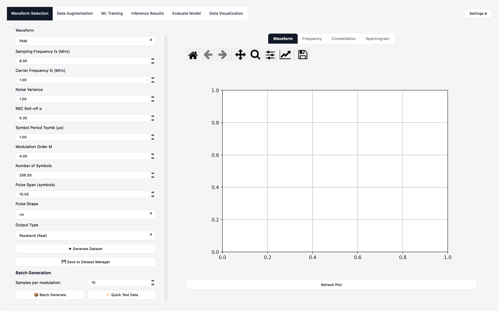
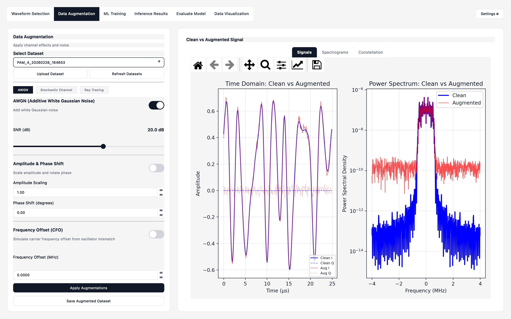
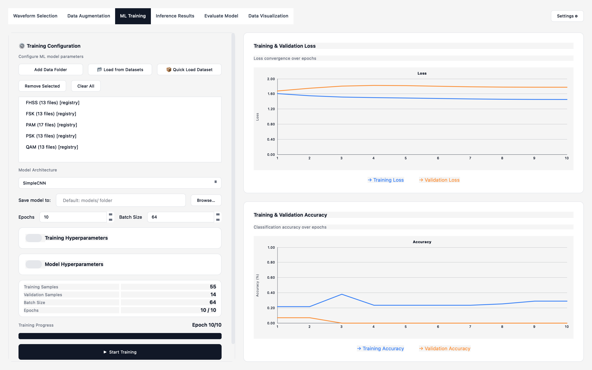
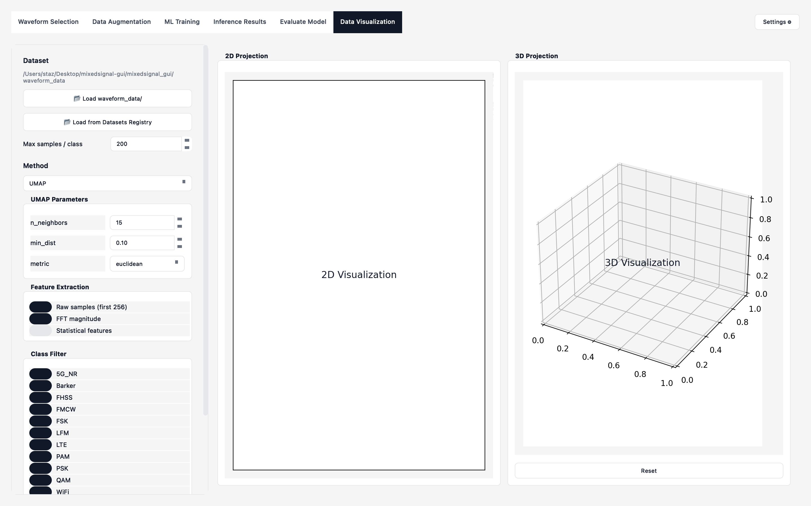

A desktop platform for generating digital communications waveforms, simulating realistic channel effects, training deep learning classifiers, and evaluating model performance — all in one GUI.
Six integrated modules cover the full pipeline from raw waveform to trained classifier.
Generate 11 digital modulation schemes including QAM, PSK, FSK, WiFi, LTE, and 5G NR with configurable symbol rates, carrier frequencies, and pulse shaping.
Apply AWGN, frequency offsets, amplitude/phase distortions, and 3GPP TDL fading profiles A–F. Sionna integration enables ray-tracing-based channel augmentation.
Train SimpleCNN, TinyConv, ResNet1D, or MLP classifiers using PyTorch or TensorFlow. Configure epochs, learning rate, dropout, and early stopping from the GUI.
Evaluate batch inference with confusion matrices, per-class precision/recall/F1 scores, and multi-class ROC curves with AUC — visualized interactively via Matplotlib.
Explore dataset structure in 2D and 3D using PCA, t-SNE, and UMAP. Identify cluster separation and overlap across modulation classes.
Generate live waveforms and run inference against your trained model instantly. Compare predictions across modulation types to probe generalization.
Every tab in the pipeline — from waveform configuration to 3D data visualization.




From raw waveform generation to model evaluation and dataset exploration.
Pick modulation, set symbol rate, carrier frequency, and pulse shape. Preview in real time.
Add AWGN, fading, frequency offsets, and 3GPP TDL / Sionna ray-tracing effects.
Select CNN, ResNet, or MLP architecture, configure hyperparameters, watch live training charts.
Batch classify a test dataset and inspect confusion matrices, ROC curves, and per-class F1.
Generate fresh signals on-the-fly and probe your trained model in real time.
Reduce dimensions with PCA, t-SNE, or UMAP to explore signal cluster structure.
Authors of “An End-to-End RFML Toolbox for Channel-Aware Experimentation.”
MixedSignal GUI is free and open source. Clone the repo, install dependencies, and start classifying signals in minutes.
github.com/yliyli/RFML-Toolkit · 0 downloads tracked this session